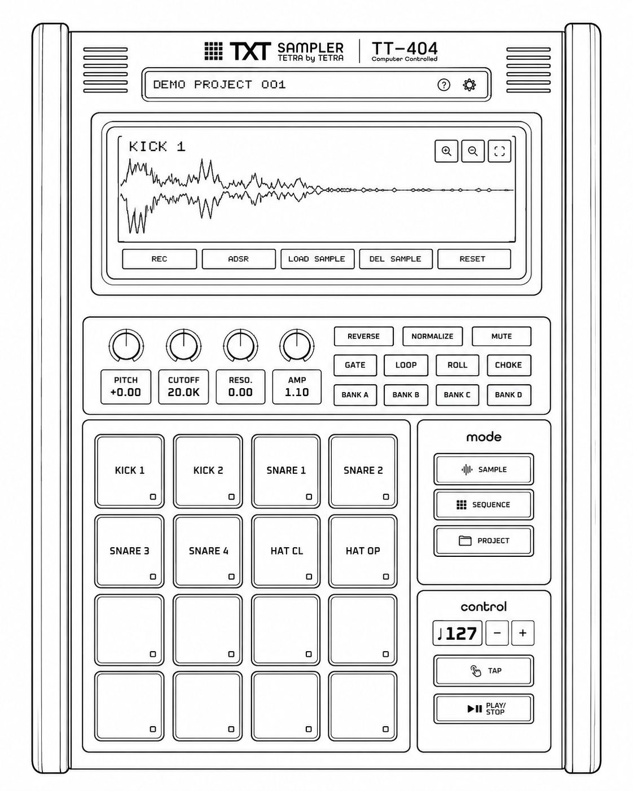
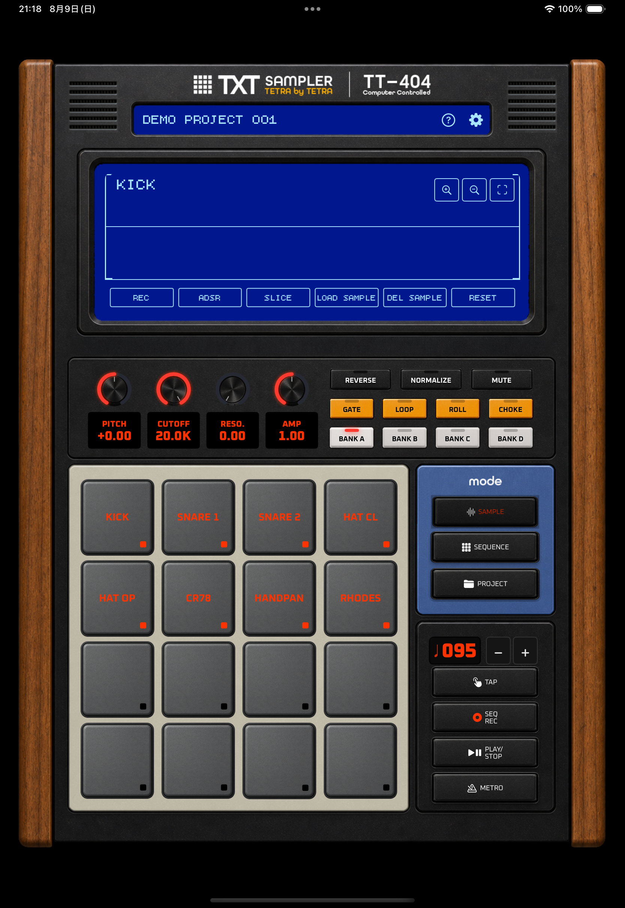
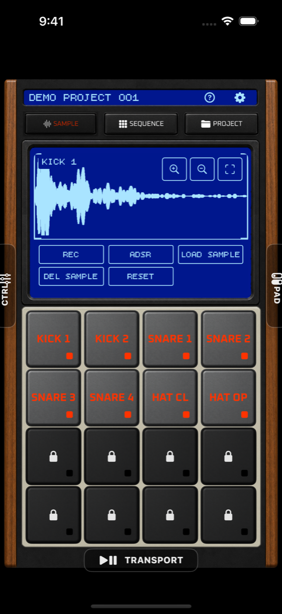
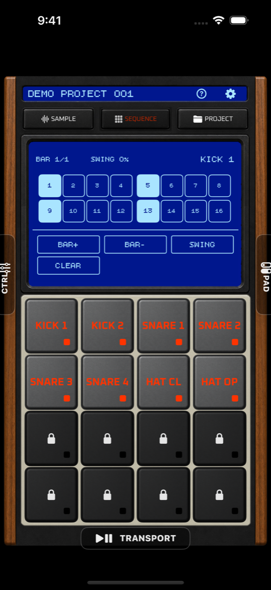
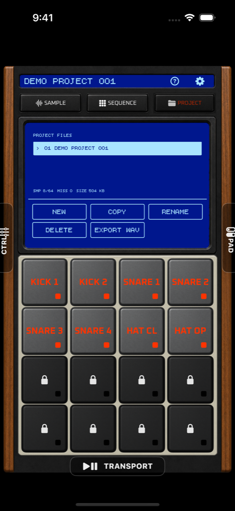
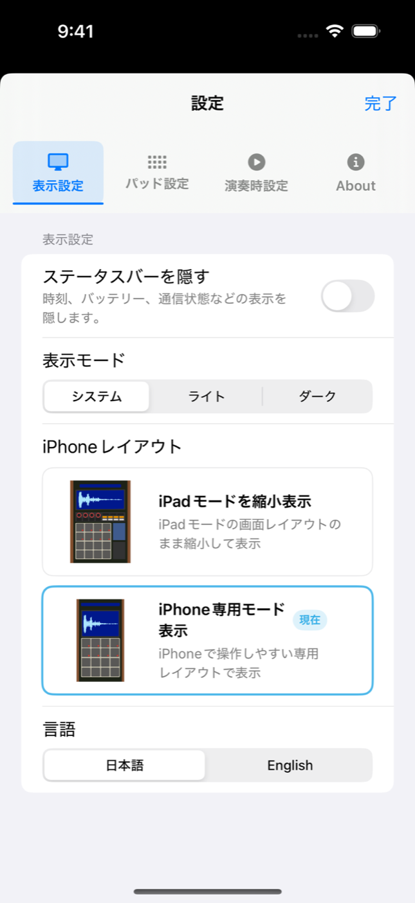
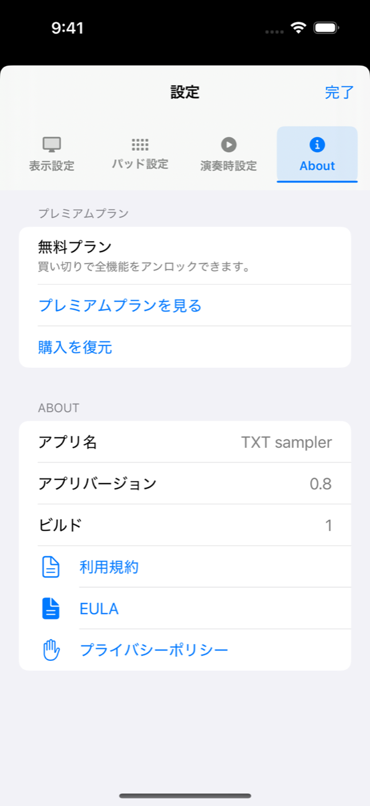

サンプルを用意する
マイクで録音するか音声ファイルを読み込み、波形と音色を整えます。
公式取扱説明書
TXT sampler / TT-404
バージョン 1.0

01
はじめに
iPhone・iPad共通の操作を説明します。画像上の青い番号は、右側または直後にある説明番号と対応しています。ボタン名は LOAD SAMPLEのように、アプリと同じ英語表記で示します。
マイクで録音するか音声ファイルを読み込み、波形と音色を整えます。
16ステップのグリッドへ音を配置し、繰り返し再生します。
サンプル、パッド設定、シーケンスを保存し、完成したループをWAVにします。
音を入れたいパッドをタップします。選択中のパッド名が波形画面に表示されます。
音声ファイルを選ぶと、現在選択しているパッドへ読み込まれます。
読み込み後にパッドをタップします。音が出れば準備完了です。
02
画面構成

現在のプロジェクト名、ヘルプ、設定を表示します。
波形、シーケンス、プロジェクト情報と、各モードの操作ボタンを表示します。
ノブとスイッチで、選択中のパッドの音を調整します。
サンプルの選択と演奏に使用します。無料プランで使えるのは上部8パッドです。
SAMPLE／SEQUENCE／PROJECTを切り替えます。
BPM、TAP、再生・停止を操作します。

3つの制作モードを切り替えます。
選択中モードの中心操作を表示します。
4列×4行のパッドでサンプルを選択・演奏します。
サンプルのピッチやフィルタを操作。SEQUENCEモード時はエフェクトなどがコントロールできます。
サンプルのロール（連打）やループ再生、逆再生などがコントロールできます。
下部から再生・停止などの操作を開きます。
| 表示方式 | 特徴 |
|---|---|
| iPhone専用表示 | iPhoneでの操作性、演奏性を重視したレイアウトです。縦画面に最適化。左右・下部タブで補助操作を開きます。 |
| iPad縮小表示 | iPad版と同じレイアウトを、iPhone画面内へそのまま縮小して表示します。iPhoneでも実機風レイアウトを楽しみたい方に。 |
表示方式は起動時に選択でき、後から「設定 ＞ 表示設定」でも変更できます。
03
SAMPLEモード
サンプル名と波形を確認し、START／ENDで再生範囲を決めます。
REC、ADSR、LOAD SAMPLE、DEL SAMPLE、RESETを使用します。
編集したいパッドを先に選びます。
ピッチ、フィルター、音量、再生方法を調整します。
無料プランは最大10秒、プレミアムプランは最大60秒の音声ファイルを読み込めます。
すでに音があるパッドを録音先にすると、確定時に既存サンプルが置き換わります。
波形のSTARTとENDを動かすと、 TRIMが表示されます。TRIMを実行すると、現在の範囲を新しいサンプルとして上書きします。
必要な場合は、先にプロジェクトを複製してください。ピッチやADSRなどのパッド設定は維持されます。
04
SEQUENCEモード

タップして音を鳴らす位置をオン・オフします。
小節数、Swing、選択中パッドのパターンを調整します。
パッドを変えると、そのパッドのステップ表示へ切り替わります。
再生・停止、リアルタイム録音、クオンタイズを操作します。
曲全体の速さを変更します。
偶数ステップを遅らせて、跳ねたリズムにします。
再生中に叩いたパッドをシーケンスへ記録します。
リアルタイム録音したタイミングをステップへそろえます。
BAR+で小節を追加し、BAR-で末尾の小節を減らします。 無料プランは2Bar、プレミアムプランは最大8Barです。
SEQUENCEモードでは4つのノブがDIST.、DL. TIME、 DL. FBK.、DL. LVとして動作します。
CLEARは選択中のパッドのシーケンスを消去します。
05
PROJECTモード

サンプル数、欠落ファイル、データサイズを表示します。
NEW、COPY、RENAME、DELETE、EXPORT WAVを使用します。
PROJECT中にパッドを押すと、SAMPLEへ移動してその音を鳴らします。
保存済みパターンを再生・停止します。
プロジェクトには、サンプル、パッド設定、シーケンス、BPMなどの作業内容が保存されます。
空のプロジェクトを作成します。
現在のプロジェクトを複製します。編集前の控えにも使えます。
現在のプロジェクト名を変更します。
選択したプロジェクトを削除します。
対応するプロジェクトファイルを読み込みます。
復元可能なデータを戻し、欠落サンプルへの参照を整理します。
一覧メニューやスワイプ操作から削除する場合も、対象プロジェクトをよく確認してください。
エフェクトを反映する場合は、残響を残すため最後に2秒の余白が追加されます。反映しない場合はパターンの長さぴったりで書き出します。
WAV書き出しはプレミアム機能です。
06
設定

表示設定／パッド設定／演奏時設定／Aboutを切り替えます。
ライト、ダーク、システム設定に合わせる表示を選びます。
iPad縮小表示とiPhone専用表示を切り替えます。
07
プラン比較
| 機能 | 無料プラン | プレミアムプラン |
|---|---|---|
| パッド | バンクAの上部8パッド | 4バンク・全64パッド |
| プロジェクト | 1個 | 個数制限なし |
| シーケンス | 2Bar | 最大8Bar |
| ファイル読み込み | 最大10秒 | 最大60秒 |
| マイク録音 | 最大10秒 | 最大30秒 |
| パッドカラー | 変更不可 | 変更可能 |
| WAV書き出し | 利用不可 | 利用可能 |
プレミアムプランは買い切りです。価格はApp Storeの購入画面で確認できます。再インストールや機種変更後は 「設定 ＞ About ＞ 購入を復元」を使用してください。
既存のプロジェクトやサンプルは保持されます。購入を復元すると、プレミアム機能を再び利用できます。
08
よくある質問
読み込み先パッドを先に選び、LOAD SAMPLEをタップします。ファイルの長さがプランの上限以内か確認してください。
iOSの「設定」からTXT samplerのマイク使用を許可します。その後、録音先パッドを選んでRECをタップしてください。
対象パッドを選び、LOAD SAMPLEから音声を読み込み直します。プロジェクト一覧のREPAIRで修復できる場合もあります。
通信できる状態で「設定 ＞ About ＞ 購入を復元」を実行します。購入時と同じApple Accountを使用しているか確認してください。
「設定 ＞ 演奏時設定」で「画面をスリープさせない」をオンにします。
裏面パネルのFACTORY RESETを使用します。すべてのプロジェクト、サンプル、シーケンス、アプリ設定が削除され、元に戻せません。
09
規約とプライバシー

購入案内と「購入を復元」を表示します。
利用規約、EULA、プライバシーポリシーを開きます。
本アプリの利用条件、禁止事項、免責、プレミアムプランなどについて定めています。
録音音声、読み込みサンプル、プロジェクトデータは端末内のアプリ領域へ保存され、ユーザーの操作なしに外部へ送信されません。 共有・書き出し時の保存先はユーザーが選択します。
10
データ仕様
ここに記載している数値は、アプリ内の読み込み・録音・保存・書き出しの制限に合わせています。 端末やiOSの状態により、読み込める音声ファイルでも破損ファイル、空ファイル、保護されたファイルは使用できない場合があります。
| 項目 | 仕様 | 補足 |
|---|---|---|
| 対応形式 | iOSで読み込める音声、WAV、AIFF、MP3、MPEG-4 Audio | ファイル選択画面では音声ファイルを1つ選択します。 |
| ファイルサイズ | 最大20MB | 20MBを超える音声ファイルは読み込めません。 |
| チャンネル数 | 最大2ch | モノラルまたはステレオの音声を使用できます。 |
| 読み込み時間 | 無料プラン: 最大10秒 プレミアムプラン: 最大60秒 | 上限を超えるファイルは、短く編集してから読み込んでください。 |
| 空ファイル | 不可 | 長さが0の音声ファイルは読み込めません。 |
| 項目 | 仕様 | 補足 |
|---|---|---|
| 録音時間 | 無料プラン: 最大10秒 プレミアムプラン: 最大30秒 | 録音後に「この録音を使う」を選ぶと、現在のパッドへ割り当てます。 |
| 録音一時形式 | CAF | 録音中の一時ファイル形式です。ユーザーが直接選ぶ項目ではありません。 |
| サンプルレート | 44.1kHz | マイク録音の保存時に使用します。 |
| 項目 | 仕様 | 補足 |
|---|---|---|
| パッド数 | 1バンク16パッド / 最大4バンク・64パッド | 無料プランで使えるのはバンクAの上部8パッドです。 |
| シーケンス長 | 1Bar = 16ステップ 無料プラン: 2Bar プレミアムプラン: 最大8Bar | 最大128ステップまで使用できます。 |
| BPM | 40〜300 | TAPまたはBPMコントロールで変更します。 |
| Swing | 0% / 25% / 50% / 75% | SWINGを押すたびに25%刻みで切り替わります。 |
| パッド名 | 最大32文字 | 長すぎる名前は保存時に制限されます。 |
| プロジェクト名 | 最大48文字 | ファイル名として使いやすい文字へ整えられる場合があります。 |
| 項目 | 仕様 | 補足 |
|---|---|---|
| プロジェクトアーカイブ | 最大512MB | インポートするプロジェクトファイルの上限です。 |
| WAV書き出し | プレミアム機能 | PROJECTモードのEXPORT WAVから実行します。 |
| 書き出し回数 | 1〜32ループ | 同じシーケンスを何回繰り返して書き出すかを選びます。 |
| 書き出し形式 | WAV / 44.1kHz / 2ch | シーケンス全体をステレオWAVとして作成します。 |
| エフェクトON | 末尾に2秒のTailを追加 | ディレイやリバーブなどの余韻を残します。 |
| エフェクトOFF | シーケンス長ぴったり | 余白なしで書き出します。 |
次のビートを作ろう
SAMPLEで音を用意し、SEQUENCEで並べ、PROJECTに残す。この3つがTXT samplerの基本です。
デフォルトプロジェクトのサウンドには、Freesoundで公開されているCC0ライセンスの素材を使用しています。
はじめに戻る